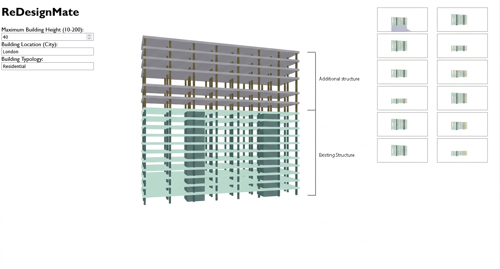
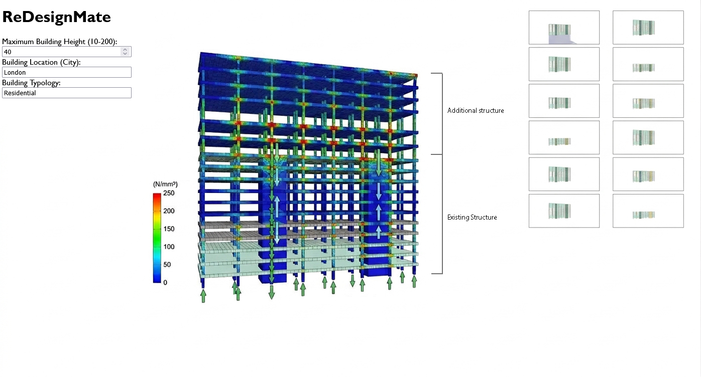

SOFTWARE · PARAMETRIC SYSTEMS · PERFORMANCE ANALYSIS
A computational tool for generating and comparing different renovation scenarios through structural and carbon analysis.
grasshopper · rhino · rhino compute · c# · javascript · structural analysis · carbon analysis
Built at the AEC Hackathon, London · 2025, with Jeroen Janssen, Rey Duong and Iliana Papadopoulou
ReDesignMate is a computational tool for exploring different ways to adapt and extend existing buildings.
It generates renovation scenarios from a set of configurable parameters, checks their structural implications, and compares different façade and material options through embodied-carbon analysis.
The geometry is generated in Grasshopper, a visual programming environment for parametric modelling that runs inside Rhino, a 3D modelling platform. A web interface connects to these models through Rhino Compute, so users can change inputs, generate alternatives and see the results interactively.
The backend logic and Rhino Compute integration are written in C#, with the web interface itself built in JavaScript.
The idea is to bring generation and analysis into the same workflow, so different options can be explored and compared without treating each step separately.


A set of parameters is used to generate different renovation and extension scenarios from the existing building.
Because the geometry is parametric, different options can be produced from the same underlying model rather than created manually one by one.
Each option can be checked against structural constraints and compared using façade, material and embodied-carbon information.
The analysis is linked directly to the generated geometry, so changes in the design can be reflected in the results.
The results are shown through the web interface, making it easier to compare different scenarios in terms of geometry, structural feasibility and carbon impact.
ReDesignMate uses adaptive reuse as a practical case for exploring how generation, analysis and comparison can be connected in one interactive computational workflow.